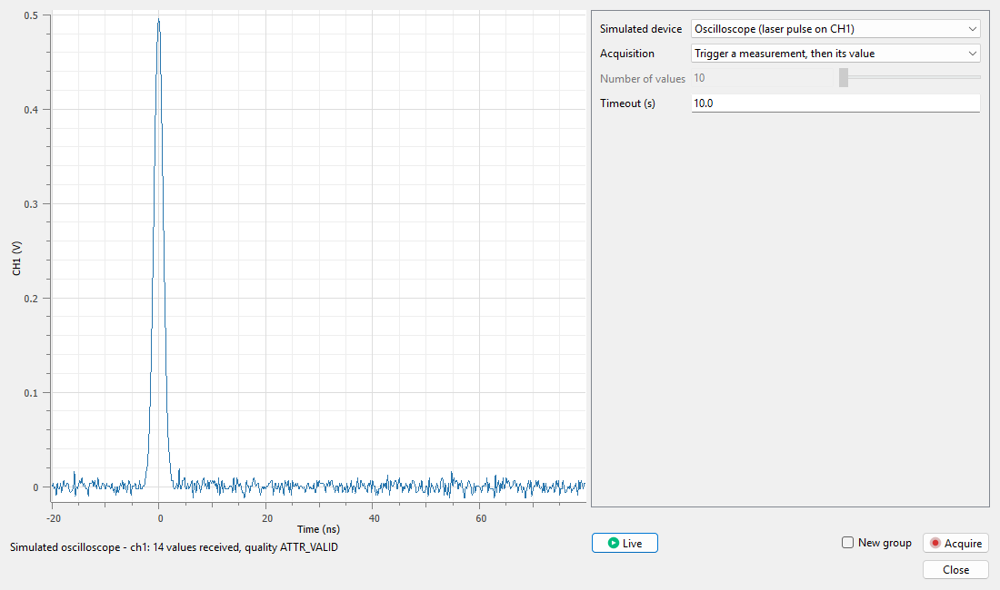

DataLab for instrument control and data acquisition#
The problem#
On a test bench or a facility, data usually go from the instrument to its vendor software, then to files, then to the analysis tool: there is no live link between what the instrument measures and what you analyze, and the acquisition context – which device, which setting, when – is easily lost along the way. Writing a dedicated acquisition application for each instrument, with its own display and analysis, is expensive.
What DataLab does#
A DataLab plugin may provide instruments: the plugin describes the instrument settings and how to read or control the device, and DataLab provides the user interface (see Instruments):
a window with a live view of the instrument data (signals or image) next to its settings, refreshed when the settings change or continuously in Live mode,
Acquire adds the acquired signals or images to the workspace, in a new group or in the current one, selected and ready for the processing, analysis and application methods of DataLab,
the instrument is called outside the user interface thread: a slow or unreachable device does not freeze DataLab, and it is released when the window closes,
the plugin may record the origin of each acquired object (device, settings, time) in its metadata, which is saved with the workspace.
The TANGO Instruments example plugin shows this approach with the devices of the TANGO control system, used by many large research facilities:
a device attribute is shown live, a spectrum as a signal, an image as an image, with the units and axis calibrations given by a JSON device profile, which holds the site-specific values (device name, calibrations, commands),
Acquire copies the last received value, runs the trigger command of the profile and takes the value it measured, or takes a series of the next received values,
each acquired object records its origin (device, attribute, times, quality, profile and trigger): a saved workspace reopens without the device nor the plugin,
a simulated oscilloscope and a simulated camera let you try it without hardware: the Simulated TANGO devices… tool serves them with PyTango on your computer while its window is open, without any command line, and stops them when the window closes.
The simulators of the camera and pulse characterization plugins are instruments of the same kind. Acquisition software may also send its data to DataLab, with the remote control (XML-RPC) or the Web API (HTTP/JSON).

Live view of the simulated oscilloscope in the window of the Simulated TANGO devices… tool of the TANGO Instruments plugin in DataLab.#
Status#
TANGO Instruments is an official example plugin of the DataLab plugin catalog: it is a demonstration, not a finished or supported feature, and has been validated with simulated devices only. It requires PyTango in the Python environment of DataLab: the standalone application and DataLab-Web, which cannot reach TANGO devices, are not supported.
Try it#
In DataLab: install PyTango in the Python environment of DataLab (e.g.
pip install "pytango>=9.5.1"), then the plugin from the Catalog tab of Plugins > Configure plugins… (see Catalog tab).Without hardware: open Simulated TANGO devices… from the Applications panel or from the plugin’s submenu of the Plugins menu, choose the simulated oscilloscope or camera, then click Acquire. To serve the same devices to another TANGO client, run
python -m datalab_tango.simulation profilesin this Python environment.Plugin documentation: device profiles, acquisition modes and simulated devices.
Your own instruments: see Instruments and From an idea to the plugin catalog.